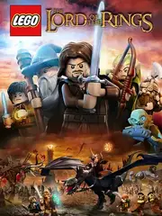

 |
|
| Tiempo de juego | 2h 3m 34s |
| Última actividad | 22/1/2026 17:59:19 |
| Añadido | 9/12/2025 19:43:35 |
| Modificado | 9/12/2025 19:45:29 |
| Estado de finalización | Jugado |
| Librería | Playnite |
| Fuente | |
| Plataforma | PC (Windows) |
| Fecha de lanzamiento | 31/12/2012 |
| Puntuación de la Comunidad | 54 |
| Puntuación de la Crítica | |
| Puntuación de usuario | |
| Género | Adventure Arcade |
| Desarrollador | Traveller's Tales |
| Editor | Warner Bros. Interactive Entertainment |
| Característica | Single Player |
| Enlaces | |
| Tag | |